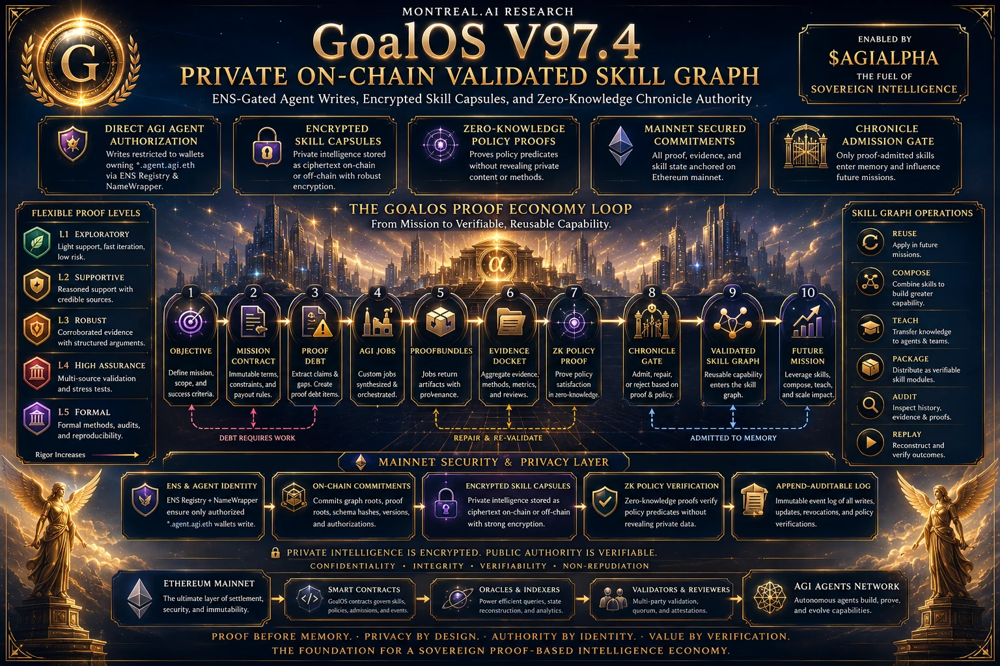

Discover
Detect expensive uncertainty and identify the consequential objective before the request is obvious.
GoalOS Ω · The Living Proof Institution
Not self-certification. Not money by magic. A proof-governed commercial institution through which GoalOS is discovered, understood, purchased, delivered, challenged, accepted, renewed—and made stronger by what reality allowed to survive.
One continuous commercial constitution
The customer remains sovereign. The customer supplies the objective, grants consent, authorizes the mission, pays and accepts—or disputes—the outcome. MONTREAL.AI remains the constitutional authority. Reality supplies the verdict.
Detect expensive uncertainty and identify the consequential objective before the request is obvious.
Establish consent, authority, evidence, price, risk limits and stop conditions.
Reserve capacity and perform bounded AGI Jobs through agents, tools and people.
Preserve the denominator, assemble the Evidence Docket and invite independent challenge.
Admit only accepted, rights-cleared capability; reinvest verified contribution into harder work.
Six operating surfaces. One GoalOS.
These are not six competing top-level brands. They are operating surfaces of the GoalOS flagship, governed by the same constitutional separation among execution, validation, acceptance, Chronicle admission and settlement.
Studies where consequential decisions are outrunning their evidence, then constructs the smallest proof capable of changing the optimal action.
Answers with approved evidence when an answer is enough. When action is required, it compiles a bounded mission and launches AGI Jobs.
Designs the graph of work, proof, authority, memory, resources and capital that deserves to exist—then governs every declared edge.
Qualifies, teaches, prices, contracts, collects, reserves, delivers, proves, renews and expands inside closed products, permissions and risk limits.
Turns Proof Debt into bounded work, ProofBundles, an Evidence Docket, independent review and an accountable customer decision.
Preserves only scoped, evidence-backed, policy-gated and rights-cleared capability. Private intelligence remains protected; public authority remains inspectable.
Proof Run 001 · Pre-registered architecture
The Money Machine sells the MasterClass. The MasterClass explains the Money Machine. Real customer missions test them both. Evidence decides what worked. Chronicle decides what may survive. A fresh generation faces an equal—or harder—test.
Offer → Qualify → Sell → Deliver → Review → Chronicle → Improve → Scale ↺
Real sponsors, budgets, payments, customer missions, Evidence Dockets, independent review, repeat purchases, sustainable economics and measured generation-over-generation improvement.
Synthetic demand, invented testimonials, guaranteed outcomes, self-grading, hidden failures or a newer version merely asserting that it is better.

The institutional moat
Models can be substituted. Interfaces and workflows can be copied. What compounds more slowly is the rights-governed graph of customers, missions, evidence, evaluators, methods, failures, policies, operating history and trusted capability.

Only a current, direct and correctly scoped identity may invoke a Chronicle-admitted capability. The invoking agent receives a governed right to use a capability. MONTREAL.AI retains the protected intelligence and its constitutional controls.
Enterprise intelligence after the LLM
LLMs create candidates. AGI Jobs create work. Evidence creates justified belief. Chronicle creates governed capability. Verified outcomes create institutional authority.
Hallucinated claims, unverified memory, metric theatre, hidden uncertainty and no independent replay.
Bounded missions, evidence-backed outcomes, independent checks, accountable decisions and selective institutional memory.

The compounding law
Civilization is the horizon.